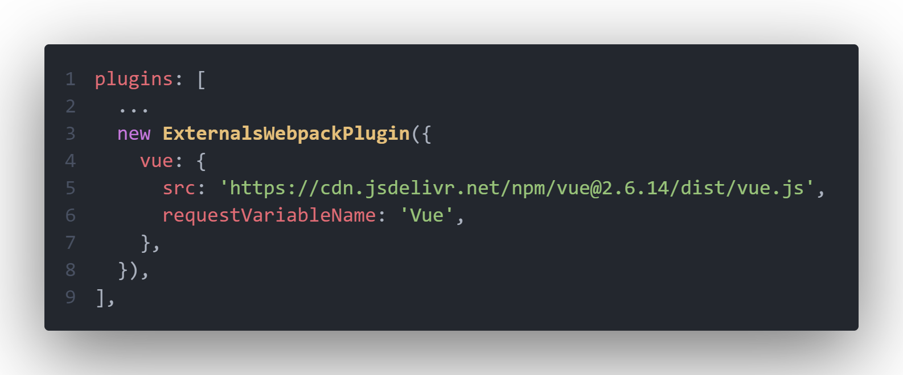

本文参考了：超硬核｜带你畅游在 Webpack 插件开发者的世界
需求
有时候我们需要从 CDN 而不是代码中引入依赖，webpack 提供了 external 字段供我们配置
该配置有一个缺点，设置为外部依赖后的包，不知道代码中有没有使用，以防万一我们需要在 index.html 中写 script 标签注入依赖，例如引入 lodash：
1
2
3
4
5
6
7
8
9
10
11
12
| <!DOCTYPE html>
<html>
<head>
<meta charset="utf-8" />
<title>Webpack App</title>
<meta name="viewport" content="width=device-width, initial-scale=1" />
<script src="https://cdnjs.cloudflare.com/ajax/libs/lodash.js/4.17.21/lodash.min.js"></script>
</head>
<body></body>
</html>
|
这样在实际没有使用该依赖时，会造成额外网络请求开销，影响页面加载速度
那么需要解决的问题就很明确了：
需求可以被转换成这样：
思路
默认大家都使用了 html-webpack-plugin 插件（web 项目一般都会有）
我们其实只需要在原生 externals 的基础上加多个配置填入 CDN 即可，假设有下面依赖通过 CDN 引入后会挂载到 window.Vue：
1
2
| import VueModule from 'vue';
...
|
原生 externals 配置应该长这样：
1
2
3
4
5
6
7
| const webpackConfig = {
...
externals: {
vue: 'window Vue',
},
};
|
我们的插件配置应当长这样：
1
2
3
4
5
6
| const externalPluginConfig = {
vue: {
src: 'https://cdn.jsdelivr.net/npm/vue@2.6.14/dist/vue.js',
requestVariableName: 'Vue',
},
};
|
那么插件处理配置的步骤应当拆解成这几步：
-
在解析模块的钩子中，若模块在插件配置中，使用 webpack 内置的 ExternalModule 构建外部模块并返回
以确保原生的 externals 行为一致
-
在编译代码的钩子中，在每次解析到 import 语句和调用 require 方法时，若模块在插件配置中，则添加进一个 Set （去重）保存
以达到筛选出现在代码中的模块的目的
-
使用 html-webpack-plugin 插件的钩子，在其构建好引入资源的标签对象的钩子中，将 Set 中的存在的模块的 src 添加到标签对象队列的头部
以达到解决 CDN 冗余和需要在 html 中手动添加的问题
实现
1
2
3
4
5
6
7
8
9
10
11
12
13
14
15
16
17
18
19
20
21
22
23
24
25
26
27
28
29
30
31
32
33
34
35
36
37
38
39
40
41
42
43
44
45
46
47
48
49
50
51
52
53
54
55
56
57
58
59
60
61
62
63
64
65
66
67
68
69
70
71
72
73
74
75
76
77
78
79
80
81
82
83
84
85
86
87
88
89
90
91
92
93
94
95
96
97
98
99
100
101
102
103
104
105
106
107
108
109
110
111
| import { ExternalModule } from 'webpack';
import HtmlWebpackPlugin from 'html-webpack-plugin';
const pluginName = 'ExternalsWebpackPlugin';
class ExternalsWebpackPlugin {
constructor(options) {
this.options = options;
this.transformLibrary = Object.keys(options);
this.usedLibrary = new Set();
}
apply(compiler) {
compiler.hooks.normalModuleFactory.tap(
pluginName,
(normalModuleFactory) => {
normalModuleFactory.hooks.factorize.tapAsync(
pluginName,
(resolveData, callback) => {
const requireModuleName = resolveData.request;
if (this.transformLibrary.includes(requireModuleName)) {
const externalModuleVariableName =
this.options[requireModuleName].requestVariableName;
callback(
null,
new ExternalModule(
externalModuleVariableName,
'window',
externalModuleVariableName
)
);
} else {
callback();
}
}
);
normalModuleFactory.hooks.parser
.for('javascript/auto')
.tap(pluginName, (parser) => {
parser.hooks.import.tap(pluginName, (statement, source) => {
if (this.transformLibrary.includes(source)) {
this.usedLibrary.add(source);
}
});
parser.hooks.call.for('require').tap(pluginName, (expression) => {
const moduleName = expression.arguments[0].value;
if (this.transformLibrary.includes(moduleName)) {
this.usedLibrary.add(moduleName);
}
});
});
}
);
compiler.hooks.compilation.tap(pluginName, (compilation) => {
HtmlWebpackPlugin.getHooks(compilation).alterAssetTags.tap(
pluginName,
(data) => {
const scriptTag = data.assetTags.scripts;
this.usedLibrary.forEach((library) => {
scriptTag.unshift({
tagName: 'script',
voidTag: false,
meta: {
plugin: pluginName,
},
attributes: {
defer: true,
type: undefined,
src: this.options[library].src,
},
});
});
return data;
}
);
});
}
}
export default ExternalsWebpackPlugin;
|
使用
在配置文件中引入插件并使用

index.html 文件
1
2
3
4
5
6
7
8
9
10
11
12
13
14
15
16
17
18
19
| <!DOCTYPE html>
<html lang="en">
<head>
<meta charset="UTF-8" />
<meta http-equiv="X-UA-Compatible" content="IE=edge" />
<meta name="viewport" content="width=device-width,initial-scale=1" />
<title>webpack-plugin-test</title>
<script
defer="defer"
src="https://cdn.jsdelivr.net/npm/vue@2.6.14/dist/vue.js"
></script>
<script defer="defer" src="index.bundle.a04e601c.js"></script>
<link href="index.a7c1f53f.css" rel="stylesheet" />
</head>
<body>
<div id="app"></div>
</body>
</html>
|